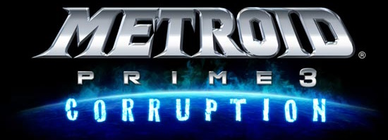

Metroid Prime 3: Corruption

| Release Date: | August 27th, 2007 |
| Genre: | First Person Shooter Metroidvania |
| Developer: | Retro Studios |
| Platform: | Wii, & Wii U |
| Details: | Wikipedia |
This is the third entry to the Metroid Prime series, continuing the story of Samus’s fight against the spreading Phazon in the galaxy. With Prime 4’s release coming up next year, I wanted to make sure I was all caught up on the series beforehand. Unlike Prime 2, I started this one on PrimeHack, as I didn’t want to deal with a first-person shooter with Wii motion controls.
Gameplay
Overall, this plays very similarly to the previous Prime games, so I’ll only touch on the mechanics that are only introduced within this game. This game still follows the same formula as other metroid games, of locking progression behind the various upgrades hidden across the map. The main difference here is that the map isn’t limited to a single planet this time, but instead spread across multiple locations that you travel to with your own ship. It’s a neat change of pace, allowing for fast travel to different points on a planet with your ship, and introduces some environments that I haven’t explored before in these games.
However, I think this caused the game to feel a lot more linear than previous entries. It wasn’t till the final planet that it felt like previous entries that the game-space was all interconnected and encouraged backtracking to find new power-ups. That’s not to say there wasn’t any backtracking earlier on, it just felt less because of the clear progression from planet to planet. It made the game feel more level-based than an interconnected world. This improved as the game opened up more the further in I got, but it was a stark contrast early on that stuck with me.
The power-ups given in this game weren’t as exciting as previous games, as most were introduced in past games. This one did introduce upgrades for your ship, which was a neat way to tie your ship more into the gameplay, but those power-ups were rarely used… I guess my gripe here is that some of these power-ups you get felt fairly one-note, used a handful of times and then never touched again. It diminishes their feeling of growth to your toolkit, and more of just a key towards progressing.
I do also want to mention that I am very glad that I played this on PrimeHack instead of on my Wii U. If I thought the controls of Prime 2 were terrible on it, then I would've lost my mind with this one. Since this game originally made for the Wii, they went all in on the motion controls, requiring you to move the controller in certain directions to unlock doors, activate machines, pressing buttons, navigating your ship, you name it. I get it as it does provide a level of immersion of physically moving the control to interact with the game world, but I'm not the biggest fan of it.
Story & Worldbuilding
Unlike previous entries to the Prime series, you kind of get two levels of story-telling throughout this game. First, the overarching plot of the game, giving you reason to go to these various locations to prevent the spread of Phazon and uncover the origins of it all. This ties in aspects of the Metroid universe that I haven’t seen too much about, of directly interacting with the Galactic Federation and seeing Samus’s relation with other Bounty Hunters of the galaxy.
As you’re progressing through this plot, you also uncover lore of each location you visit, learning about the ruins you may be traversing, or the purpose of the floating towns for the federation. It’s more akin to the lore received in previous games, and while there’s not as much of it due to the smaller scale of what’s explorable per each planet, it contextualizes the areas that you are visiting, indicating their importance for the inhabitants of this planet during your brief visit through them.
Also, I love how you can clearly see Samus becoming more and more corrupted as the game goes on. It took me a bit to realize, but at some point I noticed how she loss nearly all the color in her suit, and almost seemed to resemble Dark Samus. It was a nice detail showing that while you are getting stronger with these new Phazon-based abilities, how much can she take before she loses herself to the Phazon too?
Overall Thoughts
I enjoyed my time with this game. I don't think it's as strong as the previous entries to the series, as the multi-planet adventure feels like it segmented the game into designated zones, losing that interconnected feeling that previous games have had. Though that allowed them to tell a new story, allowing us explore new types of areas that weren't possible before (there was one area that I absolutely loved the atmosphere of that wouldn't of been possible before, can't say it though without spoilers). The progression through the game felt a lot more linear before, with clear points where it signifies for you to backtrack to find the one ability you need to progress, which is then used once and never touched again.
It has flaws, but still a Prime game through and though. It's different, and I like how it let us interact with these entities like the Galactic Federation that have only been mentioned in logbook entries before. It was a climatic adventure to end this Phazon story on, involving more than just Samus in answering this call to action. I'm really glad I played this before Prime 4, as it has me wondering where they'll be taking this story next, or how will they tie that game into the events that took place here. It's made me more excited for what's to come!